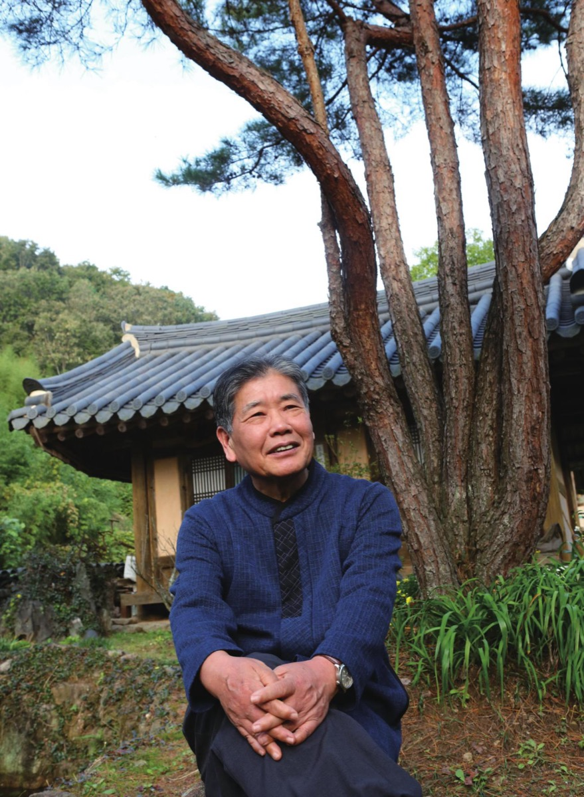
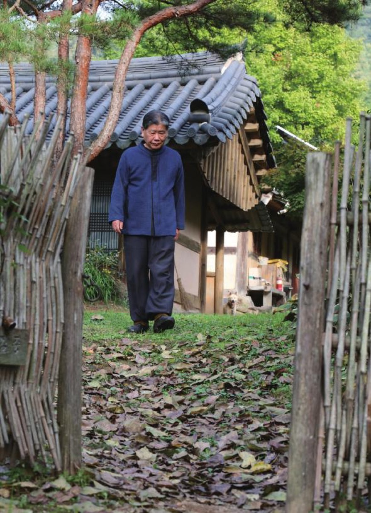
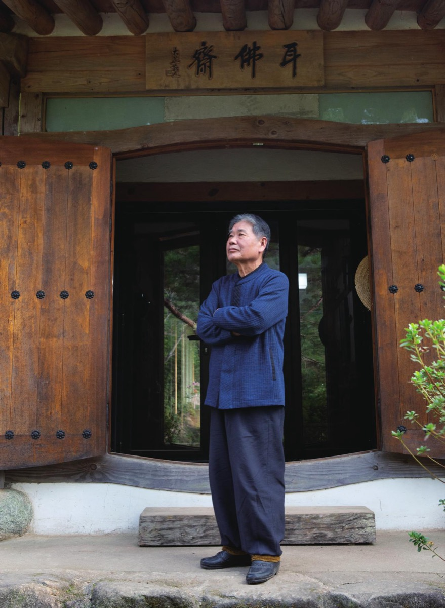
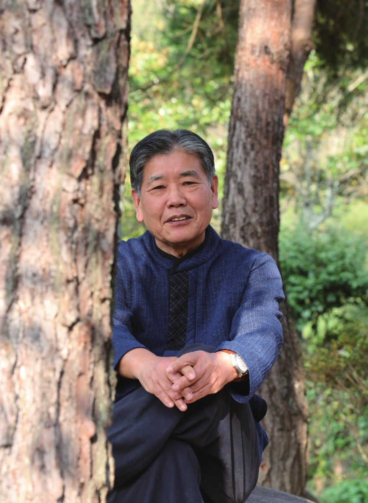

Jeong Chanju
Korean novelist and essayist whose work returns again and again to Buddhist practice, historical memory, and the lives of people who keep faith with their inner calling.
Biography
Born during the Korean War in Boseong, Jeollanam-do, South Korea, Jeong Chanju made his literary debut in 1983 with the New Writer’s Award from Korean Literature. Ever since, he has steadfastly pursued his distinctive literary vision. He built Ibuljae (耳佛齋), a mountain retreat at the foot of Gyedang Mountain, where he now devotes himself to writing. He has published some 150 books with a particular interest in bringing fresh perspectives to figures from Korean history in novels such as The Son of Dangun, Sword and Wine, Song of the Boseong River, The Human Way, and A Great Man’s Dream.
His other novels include Ashoka the Great (three volumes), Celadon: Light of Enlightenment (two volumes), Gwangju Arirang (two volumes), Yi Sun-sin’s Seven Years (seven volumes), The Buddha of Gayasan’s Practice (two volumes), The Novel of Non-Possession, The Moon Reflected in a Thousand Rivers, and Dasan’s Love. His essay collections include The Path to the Hermitage (three volumes), Venerable Beopjeong’s Songs of Encouragement for Life, and Jeong Chanju’s Tea Travelogues. His honors include the Haengwon Literary Award, Dongguk Literature Prize, Hwajaeng Cultural Grand Prize, Ryu Juhyeon Literary Award, and Yusim Literary Award.
The Spirit and Breath of Honam, Drawn Up into Fiction
Yi Sun-sin, the hero of our people, saved the nation when it stood at the edge of the abyss. But did Yi Sun-sin do it all alone? He did not. He had strong backing behind him, and that backing was Honam. Yi Sun-sin himself made this known to the whole world. In a letter of July 1593 to Hyeon Deokseung, an inspector in the Office of the Inspector-General, he wrote: yangmu Honam simu gukga (若無湖南 是無國家). Without Honam, there is no nation. The Buddhist novelist and historical novelist Jeong Chanju brought exactly this into sharp focus in his epic novel Yi Sun-sin’s Seven Years. He stressed that the righteous spirit of Honam runs all through Yi Sun-sin’s struggle to save the country. Yi Sun-sin had always been in the spotlight. What was missing was the part Honam played, which had never been given its due. So Jeong looked deeply into how the spirit of Honam shone through Yi Sun-sin’s deeds, and how closely the two were bound together.
“To bring out the spirit that lives in our blood, in the DNA of the people of Honam, I buried myself in historical records and documents for ten whole years.”
He confirmed a great deal along the way. Yi Sun-sin’s achievements did not come out of nowhere. They were possible because of Honam’s will to save the country. The research also brought an unexpected gain: beyond Yi Sun-sin, he came upon the remarkable deeds of Honam’s righteous army commanders, which had never been properly brought to light. Since finishing the Yi Sun-sin novel, he has been calling these commanders back one by one and turning each into a novel. How Honam saved a nation in crisis is being laid bare at his fingertips, dressed in the clothes of lively fiction.
Fishing for Words at Ibuljae
On the way to meet him, the whole land is dancing its autumn dance. The silver grass tossing in the wind, the bright yellow persimmons hanging heavy on the mountain trees, all of it shakes with its whole body to say that the year is heading into late autumn. Even the empty paddies, the rice all cut, move to a rhythm of stillness within motion. We speed south and further south through air thick with the feeling of autumn, and arrive at Ibuljae, tucked under the slope of the mountain behind Ssangbong-sa in Hwasun. The gate, roughly lashed together from bamboo, is truly lovely. We open it and step inside, and the master of the house and his wife greet us warmly. Ibuljae (耳佛齋) joins the character for “ear” (耳) and the character for “Buddha” (佛): a mountain studio whose name means hearing the sound of water and the sound of wind, washing the ears clean, and so becoming a Buddha. It is, in effect, his writing room. Here he writes from early dawn until late morning, and in the afternoon he receives guests and talks with them. It is a place for listening to people’s stories of their lives. After twenty-four years, Ibuljae gladly takes in its visitors from Gwangju and grants them an easy conversation with its master.


He pours water into the teapot and steeps the tea. In the stillness that wraps around Ibuljae, the only sound is the clear trickle of tea being poured. With the ease of a master he steeps, pours, and leads the conversation. It is black tea, he tells us. Sipping, we are kept busy taking in the host’s words with our ears and our hearts and trying to keep up. This is a novelist who has published some 150 books. Trace his path and it runs teacher, editor, novelist. After graduating in Korean literature from Dongguk University, he taught Korean at a girls’ high school for about a year and a half. He then moved to Bulgyo Sasang (Buddhist Thought), published by the Jogye Order, where he worked as an editor, and later moved to Saemteo, where he did editing and reporting. His hometown is Boseong, Bongnae-myeon in Boseong, though he lived there only about the first hundred days of his life. During the Korean War the family moved to Jeju Island, and he spent his childhood and youth in Gwangju, moving with his father, who was a civil servant. He came to Ssangbong-sa in Hwasun twenty-four years ago, when he left the city for the countryside. Why Ssangbong-sa in Hwasun, then, and not his hometown of Boseong? There is a reason. In the early 1970s, when he was at university, protests against the Yusin regime shut down classes for three or four months, sometimes six months at a time. Every time, he packed his bag and hurried to Ssangbong-sa, where he wrote practice stories. Temples were generous in those days. Tell them you were a university student and they would feed you and put you up as a matter of course. Following that old bond, he settled barely a few hundred meters from Ssangbong-sa.
Gwangju Arirang: After Writing It, He Could Face Himself
And so at Ibuljae he has turned out book after book. Chief among them is Gwangju Arirang, a novel serialized for a year to mark the sixtieth anniversary of the Kwangju Ilbo newspaper. He wanted it published in Gwangju and nowhere else, so unlike his other novels, which were serialized on the websites of local governments in South Jeolla, this one appeared in Gwangju. He grew up looking at Mudeungsan and the Geungnak River. Gwangju is as good as a hometown to him. And Park Hyoseon, who was a fighter in the May 18 Gwangju Democratization Movement, was his friend from the days when they ran around half naked as little boys. When that friend was wanted by the authorities and on the run, he came to Jeong in Seoul. Jeong was teaching at the time. The stories of Gwangju his friend told him at night, in a hushed voice, were horrifying. Even in the middle of a lesson, when the stories came back to him, his head would swim and his hands would shake so that he could not hold the chalk. He would look out the window, calm his heart, and go on teaching. From then on, May 18 became an assignment he owed. He gathered material whenever he could, and at sixty-nine he began writing. He felt that if he put it off any longer his mind would not hold up, so he wrote in haste. He lost ten kilograms writing Gwangju Arirang. It was no easy work. Going into May in Gwangju was going into a living hell. All the strength drained out of his body, and again and again he floundered and had to pull himself together, body and mind.
“Twice I kept writing hooked up to an IV drip. It felt like a fighter climbing into the ring. More times than I can count, reading the records, my skin crawled and I shook with rage. The stories of torture at Sangmudae, the parts where paratroopers brutally stabbed citizens and leveled their guns at them, I couldn’t breathe.”
Only after he had written it did he feel he could hold his head up, and the wound in his heart began to ease.
He has often published his novels on local government websites, and there are quite a few of them. The first was Yi Sun-sin’s Seven Years, serialized on the South Jeolla provincial website. It is also the work he loves most. Through his connection with Lee Nak-yon, then governor of South Jeolla, he ran it once a week, fifty manuscript pages at a time, for three years. The 8,600 sheets of 200-character manuscript paper it took, he says with a laugh, would stack up to about the height of Mount Everest. Earlier books on Yi Sun-sin were written from a great-man view of history, so the story of the common people of Honam is almost entirely missing from them. Jeong came at it from the people’s view of history. That is how he discovered not only the greatness of Honam’s common people but also the righteous army commanders and military officers who fought in every corner of Jeolla.
After Yi Sun-sin’s Seven Years, local governments here and there flooded him with requests to bring their own hometown righteous army commanders to light. That work came comparatively easily, since he had already organized a mountain of material while preparing to write about Yi Sun-sin. They include Kim Cheonil of Naju, Im Gyeyeong of Boseong, Choe Gyeonghoe of Hwasun, Kim Eokchu of Gangjin, Bak Gwangjeon, An Bangjun, and others. He is telling, one novel at a time, how each of them rose up to save a nation in crisis.
The Yi Sun-sin of Yi Sun-sin’s Seven Years is not the Yi Sun-sin we already know. Yi Sun-sin the human being breathes in it, which makes it a real pleasure to read. A Yi Sun-sin who speaks in Chungcheong dialect reads with a whole different feel. And that is not all: the speech of Jeolla is spread thick on every page. It is full of life.
“You can’t imagine how much the language we use matters. That’s why the characters in my novels all speak Jeolla dialect just as it is.”
It carries the meaning of the words with more force, and it is his love for the speech of Jeolla. It is also his own way of refusing to lose any more of our language. Since coming down to Ssangbong-sa in Hwasun, he has kept one iron rule: “Don’t cross Neoritjae.” Apart from visiting his mother, who lives in Gwangju, he does not go to the city. He came down to write, not to socialize. Once, a group of writers, well into their drinks, came out from Gwangju to find him, along with a critic of some reputation in Seoul. They seem to have meant to have another round with him and talk over everything that had piled up. He said something that sobered them up: he had not come down here to drink, and he sent them away. As they turned to go, their backs looked quite hurt, but he could not break his own rule. How else could he have written so many books?


Lay Disciple of Venerable Beopjeong
He is a lay disciple of Venerable Beopjeong. He was a founding member of Bulgyo Sasang and then moved to the monthly Saemteo, where Beopjeong was writing a serial column. He naturally became the editor in charge of the monk’s manuscripts, and his editing work took him often to Bulil-am at Songgwang-sa. He asked the monk to accept him as a disciple, and received the dharma name Muyeom, meaning “even if you live in the marketplace, do not be stained by it.” About three years before Beopjeong died, Jeong went to Bulil-am, and the monk said to him, “The moon is lovely this evening. Stay and see the moon before you go.” “When I think of that time, when I said the moon at Ibuljae is lovely too and left, I regret it more than I can say,” Jeong adds. His recent essay collection, The Last Teacher, Venerable Beopjeong, grew out of that bond. His books on Beopjeong alone are hard to count: the novel Non-Possession, Venerable Beopjeong’s Non-Possession: Meeting Him in the Mountains, Happy Non-Possession, Venerable Beopjeong’s Songs of Encouragement for Life, and more.
He is setting off for India. This must be his thirtieth trip or so. One can’t help wondering what he will see there this time, and what he will write when he comes back. His wife, a born-and-raised Seoulite who had never lived anywhere but Seoul, came along when her husband returned to his home region. She opened a pottery studio on one side of the property, and sometimes shapes clay, sometimes fires the kiln, a companion in all of it. He holds her hand tight and heads out to the airport departure gate. And when he returns, he will write again, as he always has, as a kind of practice.